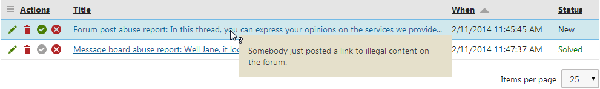

Managing abuse reports
Users in roles granted with appropriate permissions can manage abuse reports in the Abuse report application. The application allows viewing details of certain types of objects while editing related abuse reports.

List of abuse reports in the Abuse report application
You can use statuses to mark the reports – the system offers the New, Solved, and Rejected abuse report status. The statuses are just for convenient marking of reports. Changing a status does not influence the reported content.
Editing abuse reports
When you edit an abuse report, the following information is displayed:
|
Property name |
Description |
|
Title |
Title of the abuse report. |
|
URL |
URL of the page from which the report was sent. Click it to get redirected to that page. |
|
Culture |
Website culture from which the report was sent. |
|
Object type |
Type of object that was the cause of the report. If blank, the report was sent from a page. |
|
Object name |
Code name of the object that was the cause of the report. |
|
Reported by |
Site user who submitted the report. |
|
Reported when |
Time when the report was submitted. |
|
Site |
Website from which the report was submitted. |
|
Status |
Abuse report status, the following are possible:
|
|
Comment |
Comment of the report entered by the reporting user. |
Viewing object details
If you are editing an abuse report related to a blog comment, board message or forum post, the Show object details button is displayed.
Clicking the button opens a new window with details about the source of the report (the board message, blog comment or forum post). This functionality is ensured automatically by the web parts listed on the Integrating abuse reporting with other community features page. You can also achieve it in transformations of these object types by using the In-line abuse report web part. See Adding abuse reporting functionality to transformations for more details.
Configuring required permissions for managing abuse reports
Permissions for the Abuse report module can be set in the Permissions application:
Open the Permissions application.
In the first Permissions for drop-down list, choose Module.
In the second drop-down list, choose Abuse report.
You can grant the following permissions to the roles:
Read – members of the role are allowed to view the abuse reports list.
Manage – members of the role are allowed to edit, delete, mark as solved and reject abuse reports.